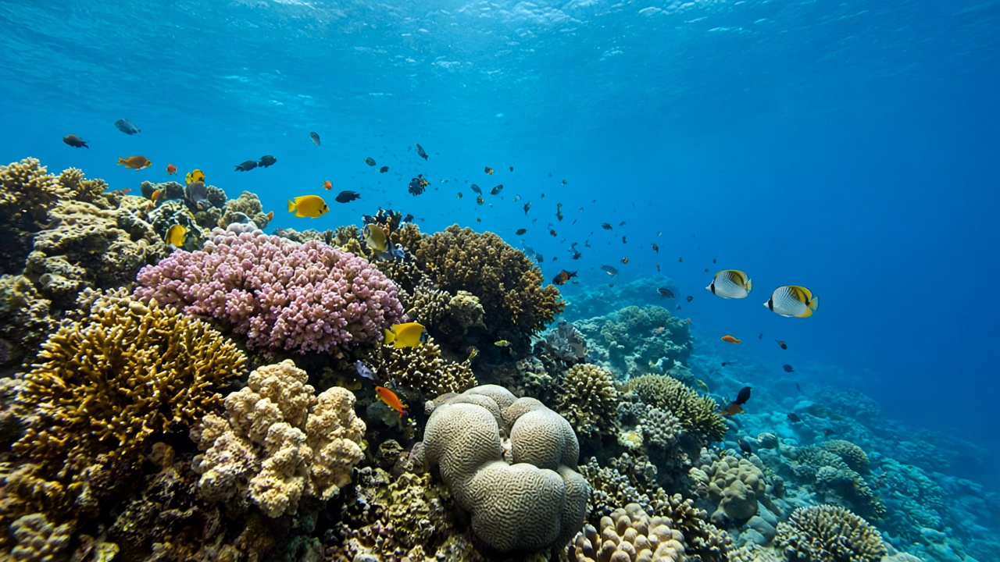
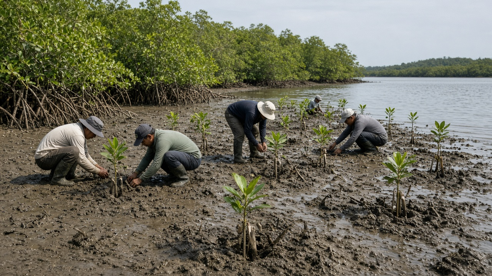
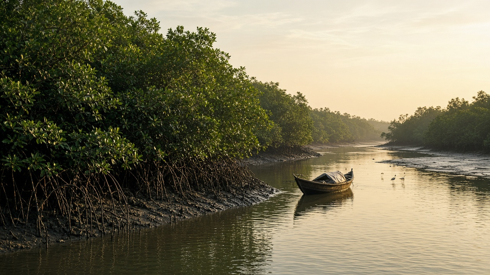

Marine Biodiversity Protection
Published on July 29, 2026

Marine biodiversity includes the extraordinary variety of life found in oceans, seas, estuaries, and coastal wetlands. These environments support fish, corals, sea turtles, whales, mangroves, seabirds, and countless microscopic organisms that together maintain the health of the planet. Oceans regulate climate, provide food, generate oxygen, and absorb large amounts of carbon dioxide. Because of this, protecting marine biodiversity is not only an environmental issue but also a global survival issue.
Marine ecosystems are under pressure from overfishing, plastic pollution, habitat destruction, and climate change. Coral reefs, which support a huge share of ocean biodiversity, are especially sensitive to warming and acidification. Coastal development and destructive fishing practices further reduce the resilience of marine habitats. Conservation responses include marine protected areas, sustainable fisheries management, pollution control, and habitat restoration such as mangrove and seagrass recovery.
Protecting marine biodiversity requires cooperation across borders because ocean systems are connected. International agreements, local community stewardship, and stronger enforcement of harmful fishing practices are all necessary. Healthy oceans are essential for future food security, tourism, and ecological balance, making marine conservation a priority for all nations.

समुद्री जैविक विविधतामा महासागर, समुद्र, मुहान र तटीय सिमसारमा पाइने जीवनको असाधारण विविधता समावेश छ। यी वातावरणले माछा, मूंगा, समुद्री कछुवा, व्हेल, म्याङ्ग्रोभ, समुद्री चरा र असंख्य सूक्ष्म जीवहरूलाई समर्थन गर्छन्, जसले मिलेर ग्रहको स्वास्थ्य कायम राख्छन्। महासागरले जलवायु नियमन, खाद्य आपूर्ति, अक्सिजन उत्पादन र ठूलो मात्रामा कार्बन डाइअक्साइड अवशोषण गर्छन्। यसैले, समुद्री जैविक विविधताको संरक्षण केवल वातावरणीय मुद्दा मात्र होइन, विश्वव्यापी अस्तित्वको मुद्दा पनि हो।
समुद्री पारिस्थितिकी तन्त्र अत्यधिक माछा मार, प्लास्टिक प्रदूषण, आवास विनाश र जलवायु परिवर्तनको दबाबमा छन्। मूंगा चट्टानहरू, जसले महासागरीय जैविक विविधताको ठूलो हिस्सा समर्थन गर्छन्, विशेष गरी तापक्रम वृद्धि र अम्लीकरणप्रति संवेदनशील छन्। तटीय विकास र विनाशकारी माछा मार्ने अभ्यासले समुद्री आवासको लचिलोपन थप घटाउँछ। संरक्षणका प्रतिक्रियाहरूमा समुद्री संरक्षित क्षेत्र, दिगो मत्स्य व्यवस्थापन, प्रदूषण नियन्त्रण, र म्याङ्ग्रोभ र समुद्री घाँस पुनर्स्थापना जस्ता आवास पुनर्स्थापना समावेश छन्।
समुद्री जैविक विविधताको संरक्षणका लागि सीमा पार सहयोग आवश्यक छ, किनभने महासागरीय प्रणालीहरू आपसमा जोडिएका छन्। अन्तर्राष्ट्रिय सम्झौता, स्थानीय समुदायको संरक्षण भूमिका, र हानिकारक माछा मार्ने अभ्यासको कडा कार्यान्वयन सबै आवश्यक छन्। स्वस्थ महासागर भविष्यको खाद्य सुरक्षा, पर्यटन र पारिस्थितिक सन्तुलनका लागि अपरिहार्य छन्, जसले समुद्री संरक्षणलाई सबै राष्ट्रका लागि प्राथमिकता बनाउँछ।

समुद्री जैव विविधता में महासागरों, समुद्रों, मुहानों और तटीय दलदलीय क्षेत्रों में पाए जाने वाले जीवन की असाधारण विविधता शामिल है। ये वातावरण मछली, मूंगा, समुद्री कछुए, व्हेल, मैंग्रोव, समुद्री पक्षी और अनगिनत सूक्ष्म जीवों का समर्थन करते हैं, जो मिलकर ग्रह के स्वास्थ्य को बनाए रखते हैं। महासागर जलवायु को नियंत्रित करते हैं, भोजन प्रदान करते हैं, ऑक्सीजन उत्पन्न करते हैं और बड़ी मात्रा में कार्बन डाइऑक्साइड अवशोषित करते हैं। इसलिए समुद्री जैव विविधता की रक्षा केवल पर्यावरणीय मुद्दा नहीं, बल्कि वैश्विक अस्तित्व का मुद्दा भी है।
समुद्री पारिस्थितिक तंत्र अत्यधिक मछली पकड़, प्लास्टिक प्रदूषण, आवास विनाश और जलवायु परिवर्तन के दबाव में हैं। मूंगा चट्टानें, जो महासागरीय जैव विविधता का बड़ा हिस्सा समर्थन करती हैं, विशेष रूप से तापन और अम्लीकरण के प्रति संवेदनशील हैं। तटीय विकास और विनाशकारी मछली पकड़ने की प्रथाएँ समुद्री आवास की लचीलापन को और कम करती हैं। संरक्षण प्रतिक्रियाओं में समुद्री संरक्षित क्षेत्र, टिकाऊ मत्स्य प्रबंधन, प्रदूषण नियंत्रण और मैंग्रोव तथा समुद्री घास पुनर्स्थापना जैसे आवास पुनर्स्थापना शामिल हैं।
समुद्री जैव विविधता की रक्षा के लिए सीमा पार सहयोग आवश्यक है, क्योंकि महासागरीय प्रणालियाँ जुड़ी हुई हैं। अंतरराष्ट्रीय समझौते, स्थानीय समुदाय की संरक्षण भूमिका और हानिकारक मछली पकड़ने की प्रथाओं का कड़ा कानूनी प्रवर्तन सभी आवश्यक हैं। स्वस्थ महासागर भविष्य की खाद्य सुरक्षा, पर्यटन और पारिस्थितिक संतुलन के लिए अपरिहार्य हैं, जिससे समुद्री संरक्षण सभी राष्ट्रों के लिए प्राथमिकता बन जाता है।